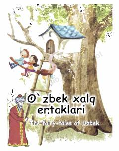

OXO'zbek va ingliz tillaridagi qiziqarli xalq ertaklari to'plami.
Ushbu to'plamda o'zbek xalq ertaklari hamda ularning ingliz tilidagi parallel tarjimalari jamlangan. Kitob yosh kitobxonlar va ingliz tilini o'rganayotgan bolalar uchun mo'ljallangan. Unda xalqimizning boy ma'naviyati va qadimiy urf-odatlari aks etgan ertaklar o'rin olgan.